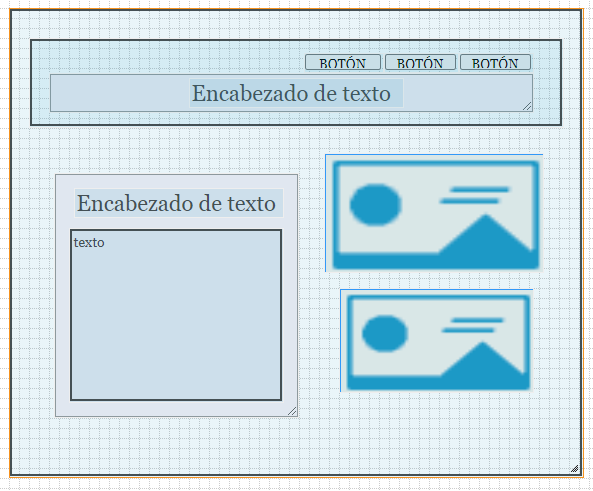

Planiar de un proyecto basado en html5 presentando el mockup sobre Git y GitHub
utilizar las etiquetas necesarias para crear un buen proyecto basado en html5
crear el mockup de la pagina principal mostrando una idea de como se visualizara la pagina solicitada
crear un buen contenido sobre Git y GitHub dando a conocer y ilustrando el funcionamiento de esta herramienta
https://www.youtube.com/watch?v=YlBy34ECh2s&ab_channel=AprendeIAconLigdiGonzalez
https://desarrolloweb.com/articulos/introduccion-git-github.html
https://blog.muktek.com/git-y-github-627858e07167
https://informaticaynadamas.com/wp-content/uploads/2020/02/git-github.jpg
https://lh3.googleusercontent.com/proxy/Ey60qcBvskz0sCn5J5XJMyaeYkyCM_yATBC8IieNZ8EqXgbFs054I8kEumx1M_PErbgPDT3doSL-Zc_n8NX4Bz-HA8Fi_jZ1IlR8JF8hUwdtnjhkaTpzfh8
Git es un sistema de control de versiones distribuido; esto quiere decir que mantiene una copia local del repositorio completo.
Al disponer de un repositorio local, puedes hacer commit (enviar cambios al sistema de control de versiones) en local, sin necesidad de estar conectado a Internet o cualquier otra red.
Git permite realizar un seguimiento de los cambios realizados en un proyecto a lo largo del tiempo y funciona registrando los cambios que realiza en un proyecto, almacenando esos cambios y luego permitiéndole consultarlos según sea necesario.
El control de versiones es una de las tareas fundamentales para la administración de un proyecto de desarrollo de software en general. Surge de la necesidad de mantener y llevar control del código que vamos programando, conservando sus distintos estados. Es absolutamente necesario para el trabajo en equipo, pero resulta útil incluso a desarrolladores independientes.
Aunque trabajemos solos, sabemos más o menos cómo surge la necesidad de gestionar los cambio entre distintas versiones de un mismo código. Prueba de ello es que todos los programadores, más tarde o más temprano, se han visto en la necesidad de tener dos o más copias de un mismo archivo, para no perder su estado anterior cuando vamos a introducir diversos cambios. Para ir solucionando nuestro día a día habremos copiado un fichero, agregándole la fecha o un sufijo como "antiguo". Aunque quizás esta acción nos sirva para salir del paso, no es lo más cómodo ni mucho menos lo más práctico.
En cuanto a equipos de trabajo se refiere, todavía se hace más necesario disponer de un control de versiones. Seguro que la mayoría hemos experimentado las limitaciones y problemas en el flujo de trabajo cuando no se dispone de una herramienta como Git: machacar los cambios en archivos hechos por otros componentes del equipo, incapacidad de comparar de manera rápida dos códigos, para saber los cambios que se introdujeron al pasar de uno a otro, etc.
